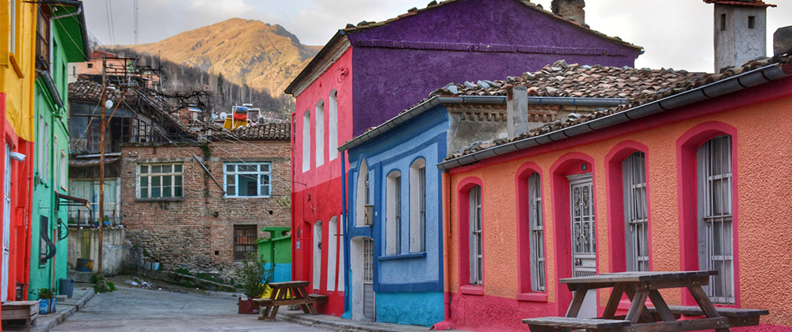
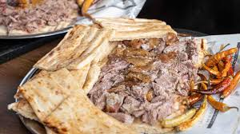
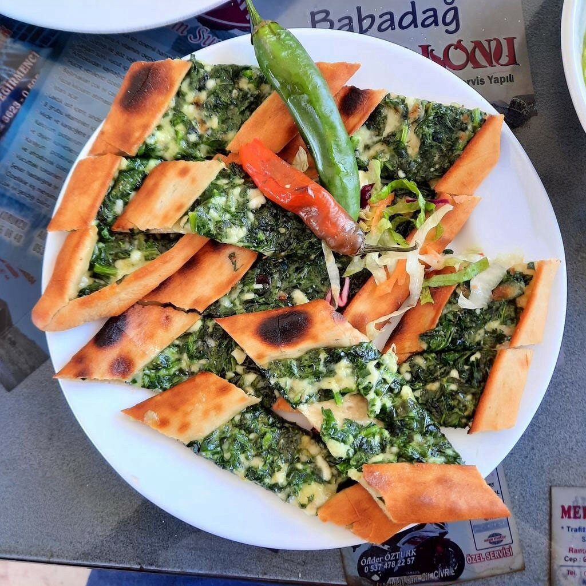
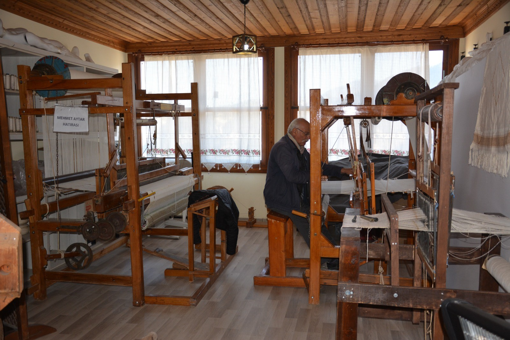

Genel Bakış
Özet: Babadağ, tarihi dokuma kültürü, yaylaları ve renkli evleriyle Pamukkale'ye entegre edilebilecek güçlü bir kırsal turizm destinasyonudur.
Babadağ ilçesi, Denizli il merkezinin kuzeybatısında yer alan; Babadağ yaylaları, Tarihi Babadağ Evleri, asırlık dokuma geleneği (Babadağ sarması) ve yöresel gastronomisi ile alternatif turizm açısından eşsiz bir potansiyele sahiptir. Bu sayfa, turizm stratejisini interaktif modüllerle sunar.
Tarihçe ve Konum
Oğuz Türklerinden bir Yörük aşiretine dayanan kökleri ve dağlık arazi yapısıyla özgün bir yerleşim yeridir.
Ekonomik Omurga
İlçenin ana geçim kaynağı dokumacılıktır. Ham bez, pike, havlu ve çarşaf üretiminde köklü bir geçmişi vardır.
Demografik Yapı
Tekstil krizleri sebebiyle göç verse de, yerel dokusunu koruyan ve turizmle canlanmayı hedefleyen bir nüfusa sahiptir.
Kültürel Ruh
Tarihi rengarenk evlerin altından gelen çekiç ve tezgah sesleri, ilçenin nostaljik atmosferini yansıtır.
Babadağ'da 1 Günlük Deneyim
Ekoturizm ve kültür turizmini birleştiren, yerel ekonomiye katkı sağlayan örnek rotamız:
Yaylalarda Doğa Keşfi
Gün, yüksek rakımlı çam ve kestane ormanları arasında ekoturizm ile başlar. Taşdelen veya Karaçöplen yaylasında yürüyüş.
- Kuş sesleri eşliğinde doğa yürüyüşü ve fotoğrafçılık
- Yardan Çayı veya Kelleci Vadisi'nde kısa bir doğa molası
Tarihi Evler ve Sokak Turu
Gazi, Gündoğdu ve Cumhuriyet mahallelerinde 18-20. yüzyıl mimarisine sahip rengarenk Babadağ evleri gezilir.
- Kırcataş Camii gibi tarihi yapıların ziyareti
- Nostaljik sokaklarda fotoğraf çekimi
Gastronomi Durağı
Öğle yemeğinde ilçenin yöresel lezzetleri tadılır, gastronomi kültürü deneyimlenir.
- Denizli Tandırı, Keşkek ve Babadağ Pidesi tadımı
- Yerel işletmelerde otantik yemek deneyimi
Dokuma Atölyeleri ve Kapanış
İlçenin ekonomik ve kültürel omurgası olan dokumacılık yerinde incelenir, el işi ürünler keşfedilir.
- Tezgah kuyusu adı verilen atölyelerde üretim süreçlerini izleme
- Babadağ sarması nakışlarını inceleme ve yerel ürün alışverişi
Özet: "1 Günlük Babadağ Deneyimi; doğa, kültür ve el sanatlarını tek bir ekonomik değer zincirinde buluşturur."
Nereye Gidilir?

Yaylalar ve Doğal Alanlar
Çam ormanlarıyla kaplı Taşdelen ve Karaçöplen yaylaları; Yardan Çayı ve Kelleci Vadisi ile doğa yürüyüşü rotaları.

Tarihi Babadağ Evleri
18. ve 20. yüzyıllar arasında inşa edilmiş, alt katından dokuma seslerinin geldiği kendine özgü mimariye sahip renkli evler.

Trapezapolis Antik Kenti
Bekirler köyü mevkiinde bulunan, Roma ve Bizans dönemi izlerini taşıyan tarihi yerleşim ve nekropol alanı.
İnteraktif SWOT Analizi
Detayları görmek için kartların üzerine gel veya karta tıkla.
Güçlü Yönler
Detay için tıklaStrengths
- Asırlık dokumacılık geleneği ve özgün el sanatları
- Tarihi Babadağ evleri ve bozulmamış mimari yapı
- Pamukkale ve Denizli merkeze stratejik yakınlık
- Yaylalar, vadiler ve zengin doğal güzellikler
Zayıf Yönler
Detay için tıklaWeaknesses
- Konaklama tesislerinin sayı ve nitelik olarak yetersizliği
- Turizm altyapısı ve yönlendirme tabelalarının eksikliği
- Dağlık arazi kaynaklı ulaşım zorlukları
- Ulusal ve uluslararası tanıtım eksikliği
Fırsatlar
Detay için tıklaOpportunities
- Kırsal turizm ve ekoturizme artan küresel ilgi
- Pamukkale'ye gelen turistlerin ilçeye çekilme potansiyeli
- GEKA ve TKDK gibi kurumlardan alınabilecek hibe destekleri
- Sürdürülebilir turizm ve otantik deneyim trendleri
Tehditler
Detay için tıklaThreats
- Yakın çevredeki diğer turizm destinasyonlarıyla rekabet
- Genç nüfusun büyükşehirlere göç eğilimi
- Geleneksel dokumacılık zanaatının yeni nesillere aktarılamaması
- Kontrolsüz yapılaşma ve doğal tahribat riski
Dijital Gastronomi Köşesi
Babadağ'ın yöresel mutfağı, ziyaretçilerin ilçede daha uzun süre kalmasını sağlayan besleyici ve geleneksel lezzetlerden oluşur.

Yöresel Lezzet
Denizli Tandırı
Bölgenin et kültürünü yansıtan, ağır ateşte pişen özel lezzet; öğle duraklarının vazgeçilmezidir.

İlçeye Özgü
Babadağ Pidesi & Keşkek
İlçenin kendi adıyla anılan pidesi ve geleneksel tören yemeği keşkek, gastronomi turlarının temelini oluşturur.
Kültürel Derinlik: Dokumacılık ve Tarih
Babadağ sadece doğal bir güzellik değil, aynı zamanda 1950'lerden bu yana el tezgahları ile yaşayan bir tekstil hafızasıdır. "Tezgah Kuyusu" adı verilen atölyeler ve Tarihi Babadağ Evleri, ilçeyi klasik bir kırsal alan olmaktan çıkarıp "Yaşayan Bir Açık Hava Müzesi" kimliğine taşımaktadır.

Neden Stratejik Bir Değer?
Babadağ sarması, çarşaf ve pike üretimindeki kalite; turistler için satın alınabilir bir anının ötesinde, deneyimlenebilir bir zanaattır. Turistlerin atölyelere girip sürece tanıklık etmesi, marka değerini katlar.
- Deneyimsel turizm avantajı: Turistlerin üretime interaktif katılımı.
- Yüksek anlatı gücü: Nesilden nesile aktarılan ustalık hikayeleri.
- Çarpan etkisi: Yerel halkın doğrudan gelir elde edebileceği kooperatif modelleri.
Tarihi evlerin altındaki atölyelerden gelen seslerin izini sürme ve ustalarla tanışma.
Tezgah başında kısa bir uygulama ile ilmek ilmek dokuma sanatını bizzat tecrübe etme.
Yerel üreticiden aracısız alınan hatıra ürünlerle ilçe ekonomisine doğrudan katkı sağlama.
Özet: "Asırlık dokuma geleneği, Babadağ'ın turizmde farklılaşan en güçlü markalaşma kozudur."
Stratejik Vizyon 2030
Babadağ'ın 2030 vizyonu; Pamukkale ile entegre olmuş, tarihi ve doğal mirasını koruyan, yerel halka istihdam sağlayan ve alternatif turizmde (ekoturizm, kırsal turizm) öne çıkan bir "Sürdürülebilir Destinasyon" olmaktır.
Pamukkale Entegrasyonu
Denizli'ye gelen milyonlarca turistin, rotasını Babadağ'ın serin yaylalarına ve tarihi dokusuna çevirmesi için tur operatörleriyle güçlü bağlar kurulacaktır.
Kırsal ve Ekoturizm Merkezi
Doğa yürüyüşleri, yayla kampçılığı ve geleneksel köy yaşamı deneyimi; çevreyi tahrip etmeden, kontrollü bir turizm modeliyle sunulacaktır.
Kadın ve Genç Girişimciliği
Dokumacılık ve yerel gastronomi üzerinden kooperatifleşme desteklenerek, kadınların ve gençlerin turizmden doğrudan pay alması sağlanacaktır.
Doğa ve Yayla Turizmi
Sıcak yaz aylarında serin havasıyla yayla turizmi, ekoturizm parkurları ve doğa sporları ile canlandırılacaktır.

Kültürel Derinlik
Tarihi evler aslına uygun restore edilerek, sokakları adeta bir açık hava müzesi olan bir atmosfere dönüştürülecektir.
Yerel Üretim Ekonomisi
Dokuma atölyeleri turizme entegre edilecek, turistler sadece izleyici değil deneyimleyen katılımcılar olacaktır.
Hedef göstergeler; yerel yönetimler, üniversiteler, kalkınma ajansları (GEKA) ve sivil toplum kuruluşları işbirliğiyle izlenecektir.
Destinasyon Karnesi (Mevcut Durum)
Kültür/Dokuma
5/5
Doğa/Yaylalar
4/5
Gastronomi
4/5
Konaklama
1/5
Analizlere göre ilçenin en acil yatırım bekleyen alanı Konaklama Altyapısıdır (1/5). İlk etapta yerel mimariye uygun küçük butik pansiyonlarla bu sorunun çözülmesi stratejik önceliktir.
| Dönem | Öncelikli Eylem | Sorumlu Yapı | Beklenen Etki |
|---|---|---|---|
| Kısa Vade (1-2 Yıl) | Turistik alanların haritalanması, dijital tanıtım platformlarının (web/sosyal medya) kurulması, yönlendirme tabelaları ve turizm karşılama noktası inşası. | Belediye, Kaymakamlık, Üniversite | Dijital görünürlük ve ilçeye giriş algısının hızlı iyileşmesi. |
| Orta Vade (3-5 Yıl) | En az 2 butik otel/pansiyon açılışı, yıllık 'Babadağ Kültür ve Dokuma Festivali' organizasyonu, tur operatörleriyle tur paketleri oluşturulması. | Özel Sektör, Ticaret Odası, STK'lar | Geceleme sayısının artması, ilçe içi ekonomik hareketlilik ve ürünlerin çeşitlenmesi. |
| Uzun Vade (5-10 Yıl) | Kırsal turizm destinasyonu olarak markalaşma, sürdürülebilir turizm sertifikasyonu, büyük ölçekli yatırım çekimi. | GEKA, Bakanlıklar, Kamu-Özel Ortaklığı | Kalıcı bölgesel rekabet avantajı ve uluslararası turizm pazarında yer edinme. |